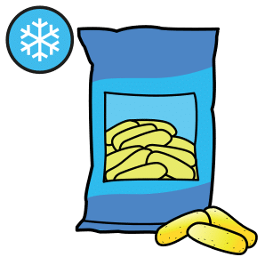

Fais défiler la page : les notions apparaissent une à une. Touche les cartes pour les retourner, touche 🔊 Écouter pour entendre une carte, une question ou une correction, puis réponds aux questions « Je vérifie mes acquis ».
1. La qualité sanitaire des aliments
Un aliment de bonne qualité sanitaire ne nuit pas à la santé du consommateur.
La qualité microbiologiqueL'aliment ne contient pas de micro-organismes dangereux, ou en quantité inférieure aux seuils réglementaires. Exemples : salmonelles, listeria, invisibles à l'œil nu.
La qualité chimiqueL'aliment ne contient pas de substances dangereuses, ou en quantité limitée par la réglementation : résidus de pesticides, métaux, substances venant des emballages.
2. L'agent contaminant
Ce qui rend un aliment dangereux : touche chaque carte.
Le danger ne se voit pas : un aliment d'aspect normal peut être dangereux.
3. Les micro-organismes
Ils se multiplient vite à température ambiante, et plus encore quand il fait chaud.
4. La chaîne du froid
0 à 4 °CAu réfrigérateur : la plupart des produits frais (voir l'étiquette).

−18 °CAu congélateur : les surgelés.
La chaîne du froid maintient les aliments à la bonne température, de la production au consommateur. Une rupture accélère la multiplication des micro-organismes.
5. Les bons gestes de conservation
Touche chaque carte pour voir le bon geste.
6. DLC et DDM
7. Allergènes et additifs
L'allergèneUne substance qui provoque une allergie : arachide, lait, œufs, céréales contenant du gluten… Même une petite quantité peut provoquer une réaction grave. Il est mis en relief dans la liste des ingrédients ; pour les plats non emballés, l'information écrite doit être disponible.
L'additifUne substance ajoutée pour conserver, colorer ou épaissir. Sur l'étiquette : sa fonction, puis son nom ou son code E. Exemple : « conservateur : E202 ». Seuls les additifs autorisés peuvent être utilisés.
Pour une allergie, on vérifie avant de répondre : on ne devine jamais.
8. Le dispositif de sécurité alimentaire
Qui fait quoi ? Touche chaque carte.
Le principe de précautionAgir face à un risque possible, même si la science n'est pas encore certaine. Exemple : après l'avis de l'EFSA en 2021, le dioxyde de titane E171 n'est plus considéré comme sûr comme additif ; il est interdit dans les aliments dans l'Union européenne depuis 2022.
 La qualité microbiologiqueL'aliment ne contient pas de micro-organismes dangereux, ou en quantité inférieure aux seuils réglementaires. Exemples : salmonelles, listeria, invisibles à l'œil nu.
La qualité microbiologiqueL'aliment ne contient pas de micro-organismes dangereux, ou en quantité inférieure aux seuils réglementaires. Exemples : salmonelles, listeria, invisibles à l'œil nu. 0 à 4 °CAu réfrigérateur : la plupart des produits frais (voir l'étiquette).
0 à 4 °CAu réfrigérateur : la plupart des produits frais (voir l'étiquette). L'allergèneUne substance qui provoque une allergie : arachide, lait, œufs, céréales contenant du gluten… Même une petite quantité peut provoquer une réaction grave. Il est mis en relief dans la liste des ingrédients ; pour les plats non emballés, l'information écrite doit être disponible.
L'allergèneUne substance qui provoque une allergie : arachide, lait, œufs, céréales contenant du gluten… Même une petite quantité peut provoquer une réaction grave. Il est mis en relief dans la liste des ingrédients ; pour les plats non emballés, l'information écrite doit être disponible.